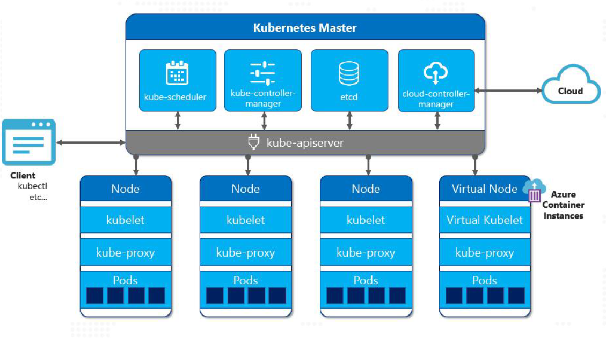
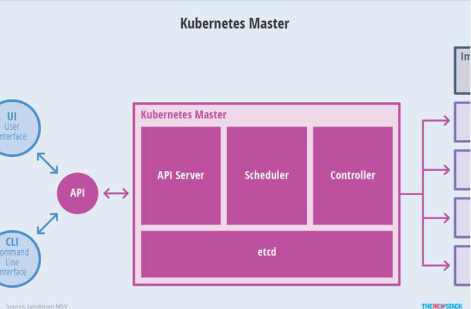
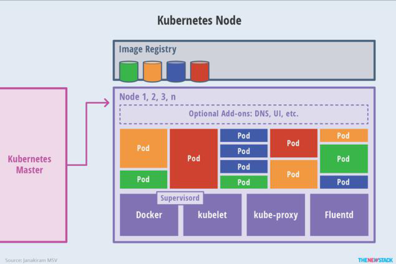
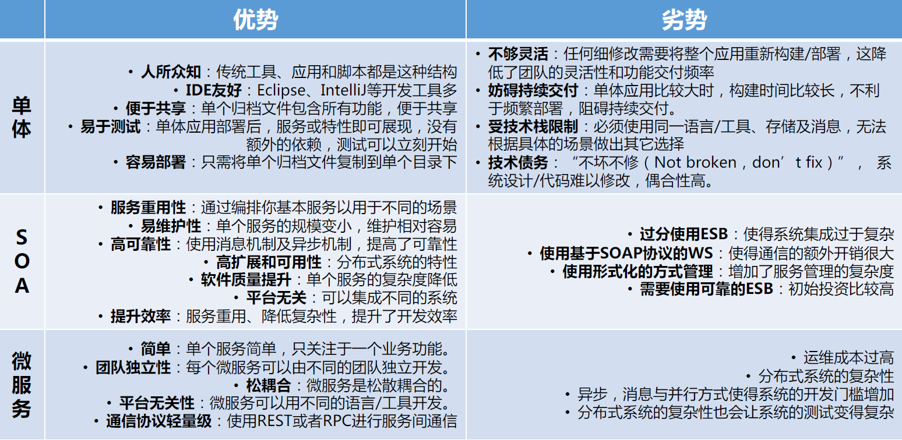
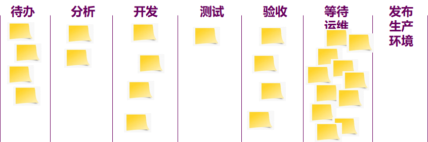
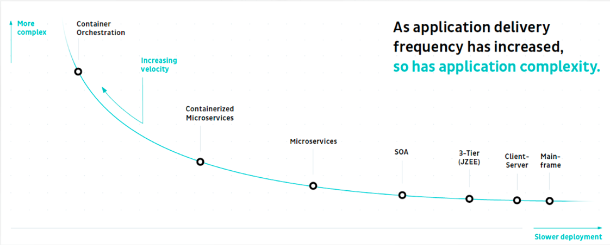
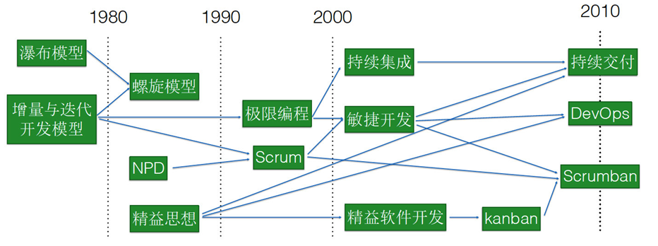

Devops复习
DevOps导论 第一讲
DevOps概念
- DevOps是运营和开发工程师共同参与整个服务生命周期的实践，从设计到开发过程再到生产支持。
- DevOps的另一个特点是，操作人员在他们的系统工作中使用许多与开发人员相同的技术。
DevOps五个概念
- 价值
- 工作软件变为服务或交付软件
- 原则
- 将敏捷的原则扩展到包括系统和操作，例如，基础设施就是代码
- 方法
- 与敏捷相同，除了一些不同的方法，例如可视操作风格的变更控制
- 实践
- CD，工具链，虚拟化和云计算，度量和监控方案，
- 工具
- Jenkins，Travis，Teamcity，Ansible，Mesos，OpenStack，Docker
DevOps关键术语
持续集成（ Continuous Integration, CI）
- 是一种开发实践，它要求开发人员每天多次将代码集成到共享存储库中。然后，每个签入都被一个自动化的构建验证，允许团队早期检测问题
持续交付（ Continuous Delivery ,CD）
- 是一组过程和实践，从根本上消除了软件生产过程中的浪费，实现了高质量功能的更快交付，并在业务和用户之间建立了快速有效的反馈循环
持续部署（Continuous Deployment, CD ）
- 意味着实际上立即部署并向用户公开更改。
Saas
- 是一种软件许可和交付模型，其中软件以订阅为基础获得许可并集中托管。
Iaas
- 云托管的虚拟机通常以“现收现付”的方式计费。用户可以完全控制机器，但需要自己安装和配置任何所需的中间件和应用程序。
Paas
- PaaS 供应商为应用程序开发人员提供了一个开发环境。供应商通常开发用于开发的工具包和标准，以及用于分发和支付的渠道。
部署频率（Deployment frequency）
- 多久部署一次代码
变更前置时间（Lead time for changes）
- 从代码提交到代码在生产环境中成功运行需要多长时间
平均恢复时间（Mean time to recover，MTTR）
- 发生服务事故时，一般需要多长时间恢复服务
变更失败率（Change failure rate ）
- 有多少百分比的变化导致服务退化或随后需要补救
Pipeline
- 为了从概念应用到生产，工程师们都要经过一系列的步骤，最终成为例行公事。
管道编排（Pipeline Orchestration）
- 允许在正确的时间调用组成持续交付管道的各种自动化任务的工具或产品。它们通常还记录每个任务的状态和输出，并可视化通过管道的特性流。
容器
- 容器为虚拟机提供了一种轻量级的替代方案，使开发人员能够使用相同的开发环境和堆栈。它们还通过鼓励使用无状态设计来促进DevOps。
Docker
- Docker是一个开源项目，可自动部署软件容器内的Linux应用程序。
微服务
- 微服务是用于建立分布式软件系统的面向服务的架构（SOA）的更具体和现代的解释。
- “微服务架构”术语在过去几年中涌现，以描述设计软件应用程序作为独立部署服务的套件的特定方式。
GIT
- Git是一种分布式修订控制系统，重点是速度，数据完整性和对分布式非线性工作流的支持。
GitHub
- GitHub是一个基于Web的Git存储库托管服务，它提供了Git的所有分布式修订控件和源代码管理（SCM）功能以及添加其自己的功能。它提供了一个基于web的图形界面和桌面以及移动集成。
A/B Testing
- 一种技术，其中一个新的特性，或者一个特性的不同变体，可用于不同的用户集，并通过比较度量和用户行为进行评估。
Devops导论 第二讲
IT服务标准
- CMMI-SVC
- ITIL
- ISO20000
- ITSS
Kubernetes
定义
Kubernetes 是一个可移植的、可扩展的开源平台，云原生操作系统，大规模集群上的应用管理系统。用于管理容器化的工作负载和服务，可促进声明式配置和自动化。
- 可移植，可扩展，开源
- 容器化的工作负载和服务
- 声明式配置
- 自动化
为什么用Kubernetes
Docker一般是用来管理单个节点上的容器，但是在生产环境中，一般会有多个节点，运行着大量的容器。这样Docker就有点力不从心了。此时就需要一个系统来管理集群上的大量的容器。Kubernetes就是这样的一个系统。
部署架构

逻辑架构
Master

Node

组件
控制平面
控制平面的组件对集群做出全局决策(比如调度)，以及检测和响应集群事件（例如，当不满足部署的replicas 字段时，启动新的 pod）
- kube-apiserver
- kube-scheduler
- kube-controller-manager
- cloud-controller-manager
- etcd
计算平面
计算平面由K8S的Node节点组成，Node节点上运行的组件包括:
- kubelet
- kube-proxy
- 容器运行时（Container Runtime）
插件
插件是k8s的辅助工具。
- DNS
- Dashboard
- 容器资源监控
- 日志
重要概念POD
POD是Kubernetes的最小资源管理单位。比较脆弱。包含
- 一个或多个应用程序容器
- 存储卷
- 网络信息，如IP地址、端口等
Workload工作负载
工作负载是在 Kubernetes 上运行的应用程序。K8s主要支持如下几种Workload工作
负载
- Deployment
- Statefulset
- Damonset
- Job
- CronJob
Service
Service定义了POD提供给外部应用的访问方式。一个服务后端有多个容器，service负责在 kubernetes 中进行负载均衡，做服务发现以及会话保持，Service通过选择一组Pod的label就直接可以访问到Pod，而且可以使用不变的域名，所以就选择Service了。
类型：
- ClusterIP
- NodePort
- LoadBalancer
- ExternalName
label
- 标签就是key/value键值对。
- 标签是K8S的一种管理资源的方式，通常用来识别资源。
- 标签和资源是m:n的关系，一个标签可以对应多个资源，一个资源也可以有多个标签。
- Node、Pod、工作负载、密钥、configmap、service等等所有资源都可以增加标签
- 标签通常用来识别资源，一般和标签选择器配合使用。
架构演化及进展
单体应用
优点
- 为人所熟知
- IDE友好
- 便于共享
- 易于测试
- 容易部署
缺点
- 不够灵活
- 妨碍持续交付
- 受技术栈限制
- 技术债务
- 性能
微服务
特点
- 每个微服务可独立运行在自己的进程里
- 一系列独立运行的微服务共同构建起整个系统
- 一个微服务只服务于某个特定的业务服务，例如订单管理、用户管理等
- 微服务之间通过一些轻量的通信机制进行通信，例如通过REST API
- 可以使用不同的语言与数据存储技术
- 全自动的部署／监控／运维机制
理念——分而治之
原则
- 高度可观察
- 隔离失败
- 独立部署
- 围绕业务概念建模
- 自动化文化
- 隐藏内部实现细节
- 一切去中心化
关注点
- 自动伸缩与修复
- 调度与部署
- 集中性能监控
- 集中日志管理
- 服务安全
- API管理
- 韧性及容错
- 服务发现与均衡
- 配置管理
对比

云原生
概念
是一种基于微服务的软件架构思想以及基于DevOps 进行软件开发实践的一组方法论，其实现了以分布式和容器技术为核心在异构云平台环境下利用云计算交付模型优势来快速构建、部署和运行企业应用。
为什么使用
- 更高的资源效率可以用更少的服务器运行同样数量的服务
- 云原生基础设施提高了开发速度
- 云原生允许多种云(包括公有云之间的转换或在多个云上运行) 以及混合云(在数据中心和公有云上切换任务)
- 云原生架构使得更快速地部署成为可能
敏捷与精益
敏捷宣言
- 个体和互动胜过流程和工具
- 可以工作的软件胜过详尽的文档
- 客户合作胜过合同谈判
- 响应变化胜过遵循计划
理解
虽然右项也具有其价值，但我们认为左项具有更大的价值。
敏捷原则
- 最重要的目标是持续不断地及早交付有价值的软件
- 欣然应对需求变化
- 经常地交付可工作的软件
- 业务人员和开发人员必须相互合作
- 激发个体的斗志
- 面对面交谈
- 可工作的软件是进度的首要度量标准。
- 倡导可持续开发
- 坚持不懈追求技术卓越与良好设计
- 简洁为本
- 最好的架构、需求和设计出自自组织团队。
- 团队定期地反思如何能提高成效，并依此调整自身的举止表现。
精益原则
全局优化
- 专注于整体价值流
- 交付完整产品
- 着眼长期
浪费消灭
三大浪费
- 构建错误的功能
- 拒绝学习
- 辗转现象
品质优先
- 最终验证不应发现缺陷
- 采用测试先行的开发模式让流程具有防误机制
- 打破依赖
不断学习
- 可预测的性能来自于反馈
- 保持选择方案
- 最后可靠时刻
尽快交付
- 快速交付、高质量和低成本是完全相互兼容的
- 排队理论同样适用于开发，而不仅仅是服务行业
- 管理工作流比管理进度表要容易得多
人人参与
- 自主性
- 成长性
- 使命感
不断提高
- 失败是个学习机会
- 标准存在的目的就是要被质疑和提高的
- 使用科学方法
Scrum
定义
Scrum 不是构建产品的一种过程或一项技术,而是一个框架,在这个框架里可以应用各种流程和技术。Scrum 能使产品管理和开发实践的相对功效显现出来,以便随时改进。
Scrum 3355
三个角色
Scrum Master
- 负责确保 Scrum 被理解并实施
- 担当教练角色，引领团队达到更高级的凝聚力、自组织和表现。
Product Owner（产品负责人）
- 负责最大化产品以及开发团队工作的价值
- 持有产品愿景、代表业务 （ the business ）、代表客户、拥有产品列表、划定故事优先级、设立故事的接收标准 、有空回答团队成员们的问题。
Team（团队）
- 自组织团队选择如何最好地完成他们的工作,而不是由团队外的其他人来指使他们。
- 全功能团队拥有完成工作所需要的全部技能,不需要依赖团队外部的人（特性团队）。
- 特性团队：一种组建跨职能团队的常见方式是让团队对某个特性负责。有些人将其称之为特性团队。这个团队对于某个特性从开始到结束全程负责。
三个工件
- Product Backlog（产品待办事项）
- Sprint Backlog （Sprint 待办事项）
- 可交付产品增量（也有说是燃尽图）
五大仪式（事件）
- Sprint（冲刺）
- Sprint Planning（Sprint规划）
- Sprint Daily Standup（每日站会）
- Sprint Review（Sprint 评审）
- Sprint Retrospective（回顾）
五大价值观 COFCR
- Coverage（勇气）
- Openness（开放）
- Focus（专注）
- Commitment（承诺）
- Respect （尊重）
3C原则
- 卡 片 (Card) （placeholder，占位符）
- 在一堆卡片上写下你期望的软件特性
- 交 谈 (Conversation)
- 聚在一起对要开发的软件进行深人讨论
- 确 认 (Confirmation)
- 对完工条件进行确认
产品Backlog
是Scrum的核心，是按重要性排序的需求或故事（Story）的列表（客户语言描述的客户需求）
用户故事地图
是一门在需求拆分过程中保持全景图的技术。
敏捷软件开发中使用用户故事地图来发现、管理需求。
Sprint计划会议
准备
- 所有重要的backlog条目都已经根据重要性被评过分,不同的重要程度对应不同的分数。
- 所有人都可以编写添加条目，但只有Product Owner才能决定优先级。
目标
- sprint目标（尽可能简单的语言，团队成员认同）。
- 团队成员名单(以及他们的投入程度,如果不是100%的话)。
- sprint backlog(即sprint中包括的故事列表)。
- 确定好sprint演示日期。
- 确定好时间地点,供举行每日scrum会议。
Scrum周期
一个星期
每日站会—Daily Scrum
- 不超过15分钟
- 回答三个问题
- 昨天我做了什么
- 今天准备干什么
- 你遇到了什么障碍，需要其他人如何帮你
Sprint演示会议
Sprint结束于演示
Sprint回顾会议
看板
定义
看板方法，由David Anderson创立，它脱胎于大野耐一所创立的丰田生产方式（TPS），以及埃利亚胡·高德拉特（EliGol-dratt）的约束理论（TOC），并结合统计质量控制（SQC）、排队论（QT）、工业工程（IE）、软件成熟度模型（CMMI）等多个领域的知识，在软件开发社区中获得了极高的关注度，并迅速传播开来。
白板：可视化工作
- 你无法对自己没有看到的进行改进。
- 让隐藏的工作无所遁形
- 为每个工作项建立一个即时贴即可轻易做到
- 帮你理凊
- 谁在干什么
- 你正在处理的工作
- 进行中的工作数量
- 工作可视化之后，信息将散播给看到的每个人
工作流映射

Work in Progress(WIP)
在制品 (WIP) 是同时进行中的工作数量，减少在制品使其快速流过整个工作流，即前置时间缩短
限制在制品
- 致力于减少同时处理的工作项
- 批量规模越小，前置时间越短
- 流动效率提升的同时资源效率会有所降低
- 立即实施:停止立项并开始完成
- 限制在制品将使改进机会浮出水面
- 着手改进后会获得更快的流动
- 不要企图找到一个唯一正确的数字作为团队的在制品限制规模.
- 在制品限制不是仅为了设立规则，而是为了触发讨论
度量
- 有利于团队改进
- 团队自己选择度量指标，但不要将度量指标用于绩效考核
- 两个常用的度量指标为:
- 前置时间是整个工作流的时间
- 吞吐量是一定时间段内完成的工作项数量
看板核心实践
- 可视化
- 限制在制品
- 管理流程
- 度量和管理流动
- 协同改进
探索可观测性的技术原理
软件开发架构的发展历程

驱动力
- 内在驱动力：期望把当前的业务做得更好，开发更多新业务
- 外在驱动力：用户量的上升、用户种类的多样化
构建分布式追踪系统难点
低开销
- 开销越小，开发人员越能接受
可扩展性
- 能够满足至少未来几年需求
应用层透明
- 应当对程序员是不可见的
应用性能管理（APM）
在信息科学和管理控制领域，APM致力于监控和管理应用软件性能和可用性。通过检测和诊断复杂应用程序的性能问题，来保证软件应用程序的良好运行。
特征
通过探针（自动字节码注入或者手动API）的形式，采集并测量端到端的性能指标
DevOps思考实践
软件发展三阶段和主流开发方法
三阶段
第一代（20世纪60年代）是软件作坊时代，那时候没有规范的流程，瀑布软件；
第二代（20世纪80、90年代）进入了过程控制时代（全面质量管理、精益制造、CCMI等）；
到2001年进入了敏捷、精益和DevOps持续交付，持续部署的时代。

主流开发方法
- 结构化方法
- Jackson方法
- 原型方法
- 面向对象方法
- 敏捷方法
- 水晶法
- 并列争求法
- 自适应软件开发
Devops可以实现
- 更高质量： DevOps通过基础设施的代码化、自动化、快速反馈，提高软件开发的质量
- 可预测性： DevOps大大降低了新版本的故障率，版本交付上线偏差更少
- 快速上线： DevOps通过持续交付持续部署将部署上线时间缩短了50％
- 可维护性：DevOps通过架构优化灰度部署等方式，可以快速回滚恢复系统
- 降低安全风险： DevOps可以将安全纳入软件交付生命周期降低安全风险
- 端到端协同：DevOps强化了围绕客户价值的跨团队、跨组织一体化协同
任务管理、项目管理、流程管理关系
任务管理
任务管理使用单个非重复性动作来完成每个任务，可能是一个独立的系统，但是更有可能是其他更高级别管理系统（例如PM和BPM）的一部分。
项目管理
PM使用严格定义的非重复顺序阶段来实现项目目标。PM涉及任务管理，由此每个项目阶段都具有明确分配的里程碑，这些里程碑可细分为各个任务。项目管理应该在业务流程的约束下开展。
流程管理
业务流程管理（BPM）涉及可重复的流程，旨在确保对运营流程进行优化，以有效，高效地满足日常的客户和业务需求。BPM使用可重复的阶段，可以修改这些阶段以实现期望的目标。BPM可以支持最大程度地提高运营效率，也可以作为项目管理工作的一部分。BPM涉及将流程分解为单个任务，从而使任务管理成为BPM不可或缺的一部分。
DevSecOps
工具
静态应用安全工具 (SAST)
- Checkmax
- Fortify
- IBM Appscan
- 酷德啄木鸟
优势：
- 白盒测试，代码具有高度可视性，安全漏洞精准定位，检测问题类型更丰富
- 不需要用户界面，漏洞发现更及时
- 容易被程序员接受
劣势：
- 区分开发语言和平台，误报多，人工成本高
- 扫码时间随着代码量的提高显著变长
- 不能测试整个问题，集成系统的漏洞发现不了
动态应用安全工具 (DAST)
- HP Webinspect
- Burpsuite
- OWASP ZAP
优势：
- 攻击者视角，可发现大多数高风险问题
- 黑盒测试，无需源代码，测试对象范围较广
- 支持当前的各类主流编程语言开发的应用
劣势：
- 对测试人员有一定的专业要求
- 大部分工具不能被自动化
- 无法定位漏洞的具体位置
- 较强入侵性，安全测试的脏数据会污染业务测试数据
交互式应用安全工具 (IAST)
Contrast Security
悬镜灵脉
优势：
漏洞检出率和准确性高，误报漏极低，漏洞信息详细度高
测试过程无感知，漏洞发现快
劣势：
- 每次更新agent需要重启webserver, 部署成本较高
- 无法测试业务逻辑漏洞
开源软件安全工具 (FOSS)
- Sonatype IQ Server
- Dependencies Check
- Jfrog X-ray
- Blackduck
CAMS原则
Culture（文化）- 是指拥抱变革，促进协作和沟通
Automation（自动化）- 是指将人为干预的环节从价值链中消除
Metrics（指标）- 是指衡量每一个环节，并通过数据来改进循环周期
Sharing（分享）- 是指与他人开放分享成功与失败的经验，并在错误中不断学习改进
Lean（精益）- 是指通过使用精益原则促使高频率循环周期
微服务开发与部署
微服务架构模式的特征
- 应用程序分解为具有明确定义了职责范围的细粒度组件
- 完全独立部署，独立测试，并可复用
- 使用轻量级通信协议， HTTP 和 JSON ，松耦合
- 服务实现可使用多种编程语言和技术
- 将大型团队划分成多个小型开发团队，每个团队只负责他们各自的服务
Service Mesh
- 一种基础设施层，服务间的通信通过Service Mesh 进行。
- 可靠地传输复杂网络拓扑中服务的请求，将服务变成现代的云原生服务。
- 一种网络代理的实现，通常与业务服务部署在一起，业务服务不感知。
- 一种 TCP/IP 之上的网络模型。
为什么使用Service Mesh
- 无需多种语言的微服务框架开发
- 对业务代码 0 侵入
- 不适合改造的单体应用
- 开发出的应用既是云原生的又具有独立性
关于容器，容器和虚拟机的区别
- 容器是与主机共享资源的独立进程。
- 与虚拟机不同，容器不会虚拟化硬件，也不需要客户操作系统。
- 在容器中，运行应用程序所需的必要组件都打包为单个映像，可重复使用。
- 执行映像时，它在隔离环境中运行，不共享内存、CPU 或主机操作系统磁盘。这可以保证容器内的进程无法监视容器外的任何进程。